6.2 Kontextfreie Grammatiken und Kellerautomaten (nicht im Sommer 2026)./course1/wly/06/02-cfg-to-pda.wly:2:11
6.2 Kontextfreie Grammatiken und Kellerautomaten (nicht im Sommer 2026)./course1/wly/06/02-cfg-to-pda.wly:2:11
Theorem 6.2.1./course1/wly/06/02-cfg-to-pda.wly:4:5 ./course1/wly/06/02-cfg-to-pda.wly:4:5 Zu jeder kontextfreien Grammatik ./course1/wly/06/02-cfg-to-pda.wly:5:9$G = (\Sigma, N, S, P)$./course1/wly/06/02-cfg-to-pda.wly:5:42 ./course1/wly/06/02-cfg-to-pda.wly:5:65 gibt es einen Kellerautomaten./course1/wly/06/02-cfg-to-pda.wly:6:9 ./course1/wly/06/02-cfg-to-pda.wly:7:9$M = (\Sigma, Q, \Gamma, \qstart, \delta)$./course1/wly/06/02-cfg-to-pda.wly:7:9,./course1/wly/06/02-cfg-to-pda.wly:7:51 der die./course1/wly/06/02-cfg-to-pda.wly:7:51 gleiche Sprache akzeptiert, also ./course1/wly/06/02-cfg-to-pda.wly:8:9$L(G) = L(M)$./course1/wly/06/02-cfg-to-pda.wly:8:42../course1/wly/06/02-cfg-to-pda.wly:8:55
Beweis Der Beweis ist vergleichsweise einfach, weil wir die./course1/wly/06/02-cfg-to-pda.wly:11:9 Grammatik eins zu eins in Automatentransitionen übersetzen./course1/wly/06/02-cfg-to-pda.wly:12:9 können. Die Idee ist, dass die Symbole auf dem Stack, von./course1/wly/06/02-cfg-to-pda.wly:13:9 unten nach oben gelesen, zu jedem Zeitpunkt eine Wortform./course1/wly/06/02-cfg-to-pda.wly:14:9 bilden, aus der der noch nicht gelesene Teil des Restwortes./course1/wly/06/02-cfg-to-pda.wly:15:9 ableitbar ist. Wenn oben auf dem Stack also ein./course1/wly/06/02-cfg-to-pda.wly:16:9 Terminalsymbol ./course1/wly/06/02-cfg-to-pda.wly:17:9$x$./course1/wly/06/02-cfg-to-pda.wly:17:24 liegt und ./course1/wly/06/02-cfg-to-pda.wly:17:27$x$./course1/wly/06/02-cfg-to-pda.wly:17:38 auch das nächste./course1/wly/06/02-cfg-to-pda.wly:17:41 Inputzeichen ist, dann poppen wir ./course1/wly/06/02-cfg-to-pda.wly:18:9$x$./course1/wly/06/02-cfg-to-pda.wly:18:43 vom Stack und lesen./course1/wly/06/02-cfg-to-pda.wly:18:46 ./course1/wly/06/02-cfg-to-pda.wly:19:9$x$./course1/wly/06/02-cfg-to-pda.wly:19:9,./course1/wly/06/02-cfg-to-pda.wly:19:12 d.h. schieben den Lesekopf um ein Zeichen nach./course1/wly/06/02-cfg-to-pda.wly:19:12 rechts; der Stack ist von ./course1/wly/06/02-cfg-to-pda.wly:20:9$x \alpha$./course1/wly/06/02-cfg-to-pda.wly:20:35 auf ./course1/wly/06/02-cfg-to-pda.wly:20:45$\alpha$./course1/wly/06/02-cfg-to-pda.wly:20:50 ./course1/wly/06/02-cfg-to-pda.wly:20:58 geschruft und das Restwort von ./course1/wly/06/02-cfg-to-pda.wly:21:9$xw$./course1/wly/06/02-cfg-to-pda.wly:21:40 auf ./course1/wly/06/02-cfg-to-pda.wly:21:44$w$./course1/wly/06/02-cfg-to-pda.wly:21:49;./course1/wly/06/02-cfg-to-pda.wly:21:52 wenn also./course1/wly/06/02-cfg-to-pda.wly:21:52 ./course1/wly/06/02-cfg-to-pda.wly:22:9$x\alpha \Rightarrow^* xw$./course1/wly/06/02-cfg-to-pda.wly:22:9 galt, so gilt nun immer noch./course1/wly/06/02-cfg-to-pda.wly:22:35 ./course1/wly/06/02-cfg-to-pda.wly:23:9$\alpha \Rightarrow^* w$./course1/wly/06/02-cfg-to-pda.wly:23:9../course1/wly/06/02-cfg-to-pda.wly:23:33 Wenn ein Nichtterminal ./course1/wly/06/02-cfg-to-pda.wly:23:33$X$./course1/wly/06/02-cfg-to-pda.wly:23:58 oben./course1/wly/06/02-cfg-to-pda.wly:23:61 auf dem Stack liegt, dieser also die Form ./course1/wly/06/02-cfg-to-pda.wly:24:9$X \alpha$./course1/wly/06/02-cfg-to-pda.wly:24:51 hat,./course1/wly/06/02-cfg-to-pda.wly:24:61 und ./course1/wly/06/02-cfg-to-pda.wly:25:9$w$./course1/wly/06/02-cfg-to-pda.wly:25:13 das Restwort ist, dann gilt also./course1/wly/06/02-cfg-to-pda.wly:25:16 ./course1/wly/06/02-cfg-to-pda.wly:26:9$X \alpha \Rightarrow^* w$./course1/wly/06/02-cfg-to-pda.wly:26:9../course1/wly/06/02-cfg-to-pda.wly:26:35 Der Automat rät nun./course1/wly/06/02-cfg-to-pda.wly:26:35 nichtdeterministisch die erste in der Ableitung angewandte./course1/wly/06/02-cfg-to-pda.wly:27:9 Produktion ./course1/wly/06/02-cfg-to-pda.wly:28:9$X \rightarrow \beta$./course1/wly/06/02-cfg-to-pda.wly:28:20,./course1/wly/06/02-cfg-to-pda.wly:28:41 löscht ./course1/wly/06/02-cfg-to-pda.wly:28:41$X$./course1/wly/06/02-cfg-to-pda.wly:28:50 vom Stack und./course1/wly/06/02-cfg-to-pda.wly:28:53 pusht ./course1/wly/06/02-cfg-to-pda.wly:29:9$\beta$./course1/wly/06/02-cfg-to-pda.wly:29:15../course1/wly/06/02-cfg-to-pda.wly:29:22 Der Stack ist nun ./course1/wly/06/02-cfg-to-pda.wly:29:22$\beta \alpha$./course1/wly/06/02-cfg-to-pda.wly:29:42,./course1/wly/06/02-cfg-to-pda.wly:29:56 und./course1/wly/06/02-cfg-to-pda.wly:29:56 ./course1/wly/06/02-cfg-to-pda.wly:30:9$\beta \alpha \Rightarrow^* w$./course1/wly/06/02-cfg-to-pda.wly:30:9../course1/wly/06/02-cfg-to-pda.wly:30:39 Entscheidend ist der./course1/wly/06/02-cfg-to-pda.wly:30:39 Nichtdeterminismus: es ./course1/wly/06/02-cfg-to-pda.wly:31:9gibt./course1/wly/06/02-cfg-to-pda.wly:31:33 eine korrekte Produktion./course1/wly/06/02-cfg-to-pda.wly:31:38 ./course1/wly/06/02-cfg-to-pda.wly:32:9$X \rightarrow \beta$./course1/wly/06/02-cfg-to-pda.wly:32:9,./course1/wly/06/02-cfg-to-pda.wly:32:30 die schlussendlich zu ./course1/wly/06/02-cfg-to-pda.wly:32:30$w$./course1/wly/06/02-cfg-to-pda.wly:32:54 führt;./course1/wly/06/02-cfg-to-pda.wly:32:57 der Automat ./course1/wly/06/02-cfg-to-pda.wly:33:9kann./course1/wly/06/02-cfg-to-pda.wly:33:22 also diese Transition anwenden../course1/wly/06/02-cfg-to-pda.wly:33:27 Formaler: Die Zustände des Automaten sind./course1/wly/06/02-cfg-to-pda.wly:34:9 ./course1/wly/06/02-cfg-to-pda.wly:35:9$Q = \{\qstart, q_1, \qend\}$./course1/wly/06/02-cfg-to-pda.wly:35:9,./course1/wly/06/02-cfg-to-pda.wly:35:38 das Stackalphabet ist./course1/wly/06/02-cfg-to-pda.wly:35:38 ./course1/wly/06/02-cfg-to-pda.wly:36:9\(\Gamma = \Sigma \cup N \cup \{\$\}\)./course1/wly/06/02-cfg-to-pda.wly:36:9 und die./course1/wly/06/02-cfg-to-pda.wly:36:47 Transitionsregeln sind./course1/wly/06/02-cfg-to-pda.wly:37:9
Auf einen formalen Beweis, dass ./course1/wly/06/02-cfg-to-pda.wly:47:9$L(M) = L(G)$./course1/wly/06/02-cfg-to-pda.wly:47:41 ist,./course1/wly/06/02-cfg-to-pda.wly:47:54 verzichte ich an dieser Stelle. Besser als Sipser in seinem./course1/wly/06/02-cfg-to-pda.wly:48:9 Lehrbuch ./course1/wly/06/02-cfg-to-pda.wly:49:9Introduction to the Theory of Computing./course1/wly/06/02-cfg-to-pda.wly:49:19 könnte./course1/wly/06/02-cfg-to-pda.wly:49:59 ich das eh nicht../course1/wly/06/02-cfg-to-pda.wly:50:9A\(\square\)
Beispiel 6.2.2./course1/wly/06/02-cfg-to-pda.wly:52:5 ./course1/wly/06/02-cfg-to-pda.wly:52:5 Betrachten wir die Grammatik./course1/wly/06/02-cfg-to-pda.wly:53:9
Ein Wort in der erzeugten Sprache wäre zum Beispiel./course1/wly/06/02-cfg-to-pda.wly:62:9
./course1/wly/06/02-cfg-to-pda.wly:63:9{./course1/wly/06/02-cfg-to-pda.wly:63:10(())./course1/wly/06/02-cfg-to-pda.wly:63:12(})./course1/wly/06/02-cfg-to-pda.wly:63:19
Schreiben wir nun einen Kellerautomaten, der./course1/wly/06/02-cfg-to-pda.wly:63:23
diese Sprache akzeptiert. Die Idee ist, dass wir./course1/wly/06/02-cfg-to-pda.wly:64:9
Terminalsymbole und Nichtterminalsymbole auf den Stack./course1/wly/06/02-cfg-to-pda.wly:65:9
legen. Ein
./course1/wly/06/02-cfg-to-pda.wly:66:9[./course1/wly/06/02-cfg-to-pda.wly:66:21
oben auf dem Stack bedeutet dann
./course1/wly/06/02-cfg-to-pda.wly:66:23ich will./course1/wly/06/02-cfg-to-pda.wly:66:58
jetzt sofort ein
./course1/wly/06/02-cfg-to-pda.wly:67:9[./course1/wly/06/02-cfg-to-pda.wly:67:27lesen./course1/wly/06/02-cfg-to-pda.wly:67:29;./course1/wly/06/02-cfg-to-pda.wly:67:35
ein Nichtterminal wie
./course1/wly/06/02-cfg-to-pda.wly:67:35$A$./course1/wly/06/02-cfg-to-pda.wly:67:59
oben./course1/wly/06/02-cfg-to-pda.wly:67:62
auf dem Stack bedeutet, dass wir als nächstes ein von
./course1/wly/06/02-cfg-to-pda.wly:68:9$A$./course1/wly/06/02-cfg-to-pda.wly:68:64
./course1/wly/06/02-cfg-to-pda.wly:68:67
ableitbares Wort, also ein
./course1/wly/06/02-cfg-to-pda.wly:69:9$A \rightarrow w \in \Sigma^*$./course1/wly/06/02-cfg-to-pda.wly:69:36
./course1/wly/06/02-cfg-to-pda.wly:69:66
lesen wollen. Um ein
./course1/wly/06/02-cfg-to-pda.wly:70:9$w$./course1/wly/06/02-cfg-to-pda.wly:70:30
mit
./course1/wly/06/02-cfg-to-pda.wly:70:33$A \rightarrow w$./course1/wly/06/02-cfg-to-pda.wly:70:38
lesen zu./course1/wly/06/02-cfg-to-pda.wly:70:55
können, müssen wir
./course1/wly/06/02-cfg-to-pda.wly:71:9sofort./course1/wly/06/02-cfg-to-pda.wly:71:29
ein
./course1/wly/06/02-cfg-to-pda.wly:71:36{./course1/wly/06/02-cfg-to-pda.wly:71:42
lesen, dann ein Wort./course1/wly/06/02-cfg-to-pda.wly:71:44
./course1/wly/06/02-cfg-to-pda.wly:72:9$v$./course1/wly/06/02-cfg-to-pda.wly:72:9
mit
./course1/wly/06/02-cfg-to-pda.wly:72:12$B \rightarrow v$./course1/wly/06/02-cfg-to-pda.wly:72:17,./course1/wly/06/02-cfg-to-pda.wly:72:34
dann ein
./course1/wly/06/02-cfg-to-pda.wly:72:34}./course1/wly/06/02-cfg-to-pda.wly:72:46
und so weiter. Wir./course1/wly/06/02-cfg-to-pda.wly:72:48
können das also im Automaten implementieren, indem wir
./course1/wly/06/02-cfg-to-pda.wly:73:9$A$./course1/wly/06/02-cfg-to-pda.wly:73:64
./course1/wly/06/02-cfg-to-pda.wly:73:67
vom Stack löschen und durch
./course1/wly/06/02-cfg-to-pda.wly:74:9$\texttt{\{} B \texttt{\}} S$./course1/wly/06/02-cfg-to-pda.wly:74:37
./course1/wly/06/02-cfg-to-pda.wly:74:66
auf den Stack legen, mit dem linkesten Symbol zuoberst../course1/wly/06/02-cfg-to-pda.wly:75:9
Wenn wir für ein Nichtterminal mehrere Regeln haben, also./course1/wly/06/02-cfg-to-pda.wly:76:9
z.B.
./course1/wly/06/02-cfg-to-pda.wly:77:9$X \rightarrow \alpha$./course1/wly/06/02-cfg-to-pda.wly:77:14
und
./course1/wly/06/02-cfg-to-pda.wly:77:36$X \rightarrow \beta$./course1/wly/06/02-cfg-to-pda.wly:77:41,./course1/wly/06/02-cfg-to-pda.wly:77:62
./course1/wly/06/02-cfg-to-pda.wly:77:62
dann können ein
./course1/wly/06/02-cfg-to-pda.wly:78:9$X$./course1/wly/06/02-cfg-to-pda.wly:78:25
auf dem Stack sowohl durch
./course1/wly/06/02-cfg-to-pda.wly:78:28$\alpha$./course1/wly/06/02-cfg-to-pda.wly:78:56
./course1/wly/06/02-cfg-to-pda.wly:78:64
als auch durch
./course1/wly/06/02-cfg-to-pda.wly:79:9$\beta$./course1/wly/06/02-cfg-to-pda.wly:79:24
ersetzen. Hierfür benötigen wir den./course1/wly/06/02-cfg-to-pda.wly:79:31
Nichtdeterminismus. Beachten Sie, dass wir ein./course1/wly/06/02-cfg-to-pda.wly:80:9
Nichtterminal grundsätzlich immer durch die entsprechende./course1/wly/06/02-cfg-to-pda.wly:81:9
rechte Seite ersetzen können, egal, was das nächste Zeichen./course1/wly/06/02-cfg-to-pda.wly:82:9
ist; es wird im Automaten also ein./course1/wly/06/02-cfg-to-pda.wly:83:9
./course1/wly/06/02-cfg-to-pda.wly:84:9$\step{\epsilon}$./course1/wly/06/02-cfg-to-pda.wly:84:9-Übergang./course1/wly/06/02-cfg-to-pda.wly:84:26
sein. Konkret also bauen wir./course1/wly/06/02-cfg-to-pda.wly:84:26
für obige Grammatik die folgenden Automatentransitionen:./course1/wly/06/02-cfg-to-pda.wly:85:9
Dies ist völlig mechanisch und benötigt kein Nachdenken../course1/wly/06/02-cfg-to-pda.wly:108:9
Wie fangen wir an? Wir legen anfangs ein
./course1/wly/06/02-cfg-to-pda.wly:109:9$S$./course1/wly/06/02-cfg-to-pda.wly:109:50
auf den./course1/wly/06/02-cfg-to-pda.wly:109:53
leeren Stack. Wenn dieses
./course1/wly/06/02-cfg-to-pda.wly:110:9$S$./course1/wly/06/02-cfg-to-pda.wly:110:35
abgearbeitet ist und das./course1/wly/06/02-cfg-to-pda.wly:110:38
Wort zu Ende ist, akzeptieren wir, und nur dann. Um./course1/wly/06/02-cfg-to-pda.wly:111:9
festzustellen, dass wir wirklich den Stack ganz leer./course1/wly/06/02-cfg-to-pda.wly:112:9
gemacht haben, brauchen wir die Markierung
./course1/wly/06/02-cfg-to-pda.wly:113:9$./course1/wly/06/02-cfg-to-pda.wly:113:54../course1/wly/06/02-cfg-to-pda.wly:113:56
Also:./course1/wly/06/02-cfg-to-pda.wly:113:56
Unsere Maschine hat also nur drei Zustände: ./course1/wly/06/02-cfg-to-pda.wly:120:9$\qstart$./course1/wly/06/02-cfg-to-pda.wly:120:53,./course1/wly/06/02-cfg-to-pda.wly:120:62 ./course1/wly/06/02-cfg-to-pda.wly:120:62 ./course1/wly/06/02-cfg-to-pda.wly:121:9$q_1$./course1/wly/06/02-cfg-to-pda.wly:121:9 und ./course1/wly/06/02-cfg-to-pda.wly:121:14$\qend$./course1/wly/06/02-cfg-to-pda.wly:121:19,./course1/wly/06/02-cfg-to-pda.wly:121:26 welches der akeptierende Endzustand./course1/wly/06/02-cfg-to-pda.wly:121:26 ist. Beachten Sie, dass es von ./course1/wly/06/02-cfg-to-pda.wly:122:9$\qend$./course1/wly/06/02-cfg-to-pda.wly:122:40 aus keine./course1/wly/06/02-cfg-to-pda.wly:122:47 ausgehenden Transitionen gibt; sollte es also nach./course1/wly/06/02-cfg-to-pda.wly:123:9 Erreichen von ./course1/wly/06/02-cfg-to-pda.wly:124:9$\qend$./course1/wly/06/02-cfg-to-pda.wly:124:23 noch weitere Zeichen im Eingabewort./course1/wly/06/02-cfg-to-pda.wly:124:30 geben, so kann der Automat keine weiteren Schritte./course1/wly/06/02-cfg-to-pda.wly:125:9 durchführen, was einem ./course1/wly/06/02-cfg-to-pda.wly:126:9reject./course1/wly/06/02-cfg-to-pda.wly:126:33 entspricht. Erreichen des./course1/wly/06/02-cfg-to-pda.wly:126:40 Zustandes ./course1/wly/06/02-cfg-to-pda.wly:127:9$\qend$./course1/wly/06/02-cfg-to-pda.wly:127:19 führt also nur dann zu einem ./course1/wly/06/02-cfg-to-pda.wly:127:26accept./course1/wly/06/02-cfg-to-pda.wly:127:57,./course1/wly/06/02-cfg-to-pda.wly:127:64 ./course1/wly/06/02-cfg-to-pda.wly:127:64 wenn dies am Ende des Wortes geschieht../course1/wly/06/02-cfg-to-pda.wly:128:9
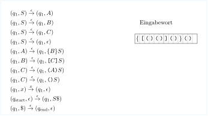
course1/public/img/context-free/cfg-to-pda/02.svg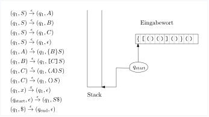
course1/public/img/context-free/cfg-to-pda/03.svg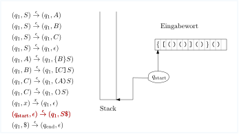
course1/public/img/context-free/cfg-to-pda/04.svg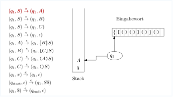
course1/public/img/context-free/cfg-to-pda/07.svg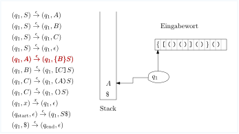
course1/public/img/context-free/cfg-to-pda/08.svg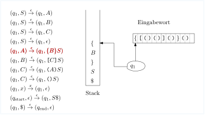
course1/public/img/context-free/cfg-to-pda/09.svg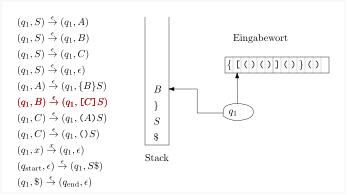
course1/public/img/context-free/cfg-to-pda/12.svg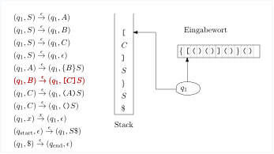
course1/public/img/context-free/cfg-to-pda/13.svg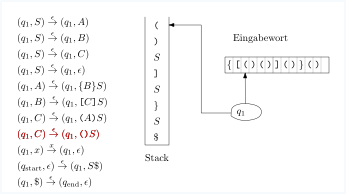
course1/public/img/context-free/cfg-to-pda/17.svg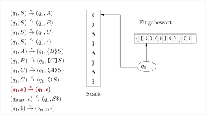
course1/public/img/context-free/cfg-to-pda/18.svg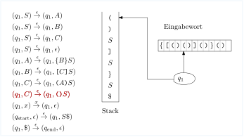
course1/public/img/context-free/cfg-to-pda/24.svg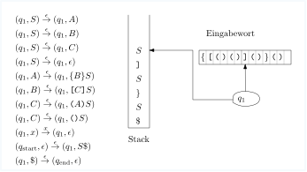
course1/public/img/context-free/cfg-to-pda/27.svg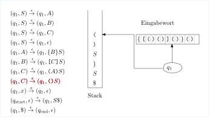
course1/public/img/context-free/cfg-to-pda/35.svg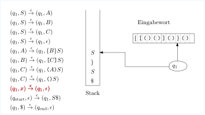
course1/public/img/context-free/cfg-to-pda/38.svg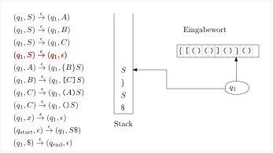
course1/public/img/context-free/cfg-to-pda/39.svg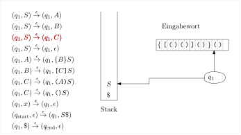
course1/public/img/context-free/cfg-to-pda/43.svg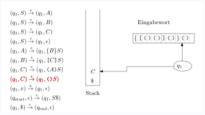
course1/public/img/context-free/cfg-to-pda/45.svg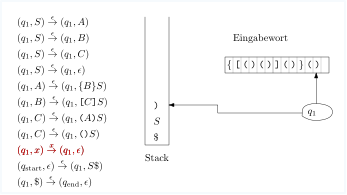
course1/public/img/context-free/cfg-to-pda/48.svg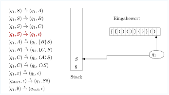
course1/public/img/context-free/cfg-to-pda/50.svg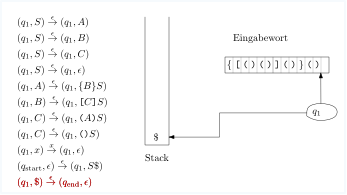
course1/public/img/context-free/cfg-to-pda/52.svg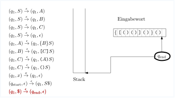
course1/public/img/context-free/cfg-to-pda/53.svgDie Gegenrichtung ist schwieriger../course1/wly/06/02-cfg-to-pda.wly:186:5
Theorem 6.2.3./course1/wly/06/02-cfg-to-pda.wly:188:5 ./course1/wly/06/02-cfg-to-pda.wly:188:5 Zu jedem Kellerautomaten ./course1/wly/06/02-cfg-to-pda.wly:189:9$M$./course1/wly/06/02-cfg-to-pda.wly:189:34 gibt es eine kontextfreie./course1/wly/06/02-cfg-to-pda.wly:189:37 Grammatik ./course1/wly/06/02-cfg-to-pda.wly:190:9$G$./course1/wly/06/02-cfg-to-pda.wly:190:19 mit ./course1/wly/06/02-cfg-to-pda.wly:190:22$L(M) = L(G)$./course1/wly/06/02-cfg-to-pda.wly:190:27../course1/wly/06/02-cfg-to-pda.wly:190:40
Ich folge hier im Wesentlichen dem Beweis aus Sipsers./course1/wly/06/02-cfg-to-pda.wly:192:5 Kapitel 2../course1/wly/06/02-cfg-to-pda.wly:193:5
Beweis Sei ./course1/wly/06/02-cfg-to-pda.wly:196:9$M = (\Sigma, Q, \Gamma, \qstart, F, \delta)$./course1/wly/06/02-cfg-to-pda.wly:196:13 der./course1/wly/06/02-cfg-to-pda.wly:196:58 Kellerautomat. Als erstes führen wir drei./course1/wly/06/02-cfg-to-pda.wly:197:9 Schönheitsoperation durch:./course1/wly/06/02-cfg-to-pda.wly:198:9
Der Automat hat einen einzigen akzeptierenden Zustand./course1/wly/06/02-cfg-to-pda.wly:202:17 ./course1/wly/06/02-cfg-to-pda.wly:203:17$\qend$./course1/wly/06/02-cfg-to-pda.wly:203:17../course1/wly/06/02-cfg-to-pda.wly:203:24 Dies können wir einfach durch ./course1/wly/06/02-cfg-to-pda.wly:203:24$\epsilon$./course1/wly/06/02-cfg-to-pda.wly:203:56 ./course1/wly/06/02-cfg-to-pda.wly:203:66 -Übergänge erreichen../course1/wly/06/02-cfg-to-pda.wly:204:17
Der Automat leert den Stack, bevor er akzeptiert. Dies./course1/wly/06/02-cfg-to-pda.wly:207:17 können wir z.B. dadurch erreichen, dass wir anfangs ein./course1/wly/06/02-cfg-to-pda.wly:208:17 ./course1/wly/06/02-cfg-to-pda.wly:209:17\(\$\)./course1/wly/06/02-cfg-to-pda.wly:209:17 auf den Stack legen und am Ende den Stack poppen,./course1/wly/06/02-cfg-to-pda.wly:209:23 bis wir ./course1/wly/06/02-cfg-to-pda.wly:210:17\(\$\)./course1/wly/06/02-cfg-to-pda.wly:210:25 gepoppt haben../course1/wly/06/02-cfg-to-pda.wly:210:31
Für jede Transition./course1/wly/06/02-cfg-to-pda.wly:213:17
ist genau eines von ./course1/wly/06/02-cfg-to-pda.wly:219:17$x,y$./course1/wly/06/02-cfg-to-pda.wly:219:37 leer (und das andere ist genau./course1/wly/06/02-cfg-to-pda.wly:219:42 ein Stacksymbol aus ./course1/wly/06/02-cfg-to-pda.wly:220:17$\Gamma$./course1/wly/06/02-cfg-to-pda.wly:220:37)../course1/wly/06/02-cfg-to-pda.wly:220:45 Eine Transition der Form./course1/wly/06/02-cfg-to-pda.wly:220:45 ./course1/wly/06/02-cfg-to-pda.wly:221:17$(p, \epsilon) \step{a} (q, x)$./course1/wly/06/02-cfg-to-pda.wly:221:17 nennen wir eine./course1/wly/06/02-cfg-to-pda.wly:221:48 ./course1/wly/06/02-cfg-to-pda.wly:222:17Push-Operation./course1/wly/06/02-cfg-to-pda.wly:222:18,./course1/wly/06/02-cfg-to-pda.wly:222:33 eine der Form./course1/wly/06/02-cfg-to-pda.wly:222:33 ./course1/wly/06/02-cfg-to-pda.wly:223:17$(p, y) \step{a} (q, \epsilon)$./course1/wly/06/02-cfg-to-pda.wly:223:17 nennen wir eine./course1/wly/06/02-cfg-to-pda.wly:223:48 ./course1/wly/06/02-cfg-to-pda.wly:224:17Pop-Operation./course1/wly/06/02-cfg-to-pda.wly:224:18../course1/wly/06/02-cfg-to-pda.wly:224:32 Der Automat kann in diese Form gebracht./course1/wly/06/02-cfg-to-pda.wly:224:32 werden, indem wir Zwischenzustände einführen:./course1/wly/06/02-cfg-to-pda.wly:225:17
Im zweiten Falle pushen wir also pro Forma ein ansonsten./course1/wly/06/02-cfg-to-pda.wly:234:17 irrelevantes Symbol ./course1/wly/06/02-cfg-to-pda.wly:235:17$\bigstar$./course1/wly/06/02-cfg-to-pda.wly:235:37 auf den Stack, um es gleich./course1/wly/06/02-cfg-to-pda.wly:235:47 darauf runterzupoppen../course1/wly/06/02-cfg-to-pda.wly:236:17
Wenn nun der Automat die eben beschriebene Form hat, so./course1/wly/06/02-cfg-to-pda.wly:238:9 ist die Idee, dass wir für jedes Paar ./course1/wly/06/02-cfg-to-pda.wly:239:9$p,q$./course1/wly/06/02-cfg-to-pda.wly:239:47 von Zuständen./course1/wly/06/02-cfg-to-pda.wly:239:52 ein Nichtterminalsymbol ./course1/wly/06/02-cfg-to-pda.wly:240:9$A_{pq}$./course1/wly/06/02-cfg-to-pda.wly:240:33 einführen, dass genau die./course1/wly/06/02-cfg-to-pda.wly:240:41 Wörter ./course1/wly/06/02-cfg-to-pda.wly:241:9$w$./course1/wly/06/02-cfg-to-pda.wly:241:16 ableiten kann, für die./course1/wly/06/02-cfg-to-pda.wly:241:19
gilt, die also den Automaten von ./course1/wly/06/02-cfg-to-pda.wly:247:9$p$./course1/wly/06/02-cfg-to-pda.wly:247:42 nach ./course1/wly/06/02-cfg-to-pda.wly:247:45$q$./course1/wly/06/02-cfg-to-pda.wly:247:51 bringen./course1/wly/06/02-cfg-to-pda.wly:247:54 können, wobei der Stack am Anfang und am Ende leer ist../course1/wly/06/02-cfg-to-pda.wly:248:9 Dies kann auf zwei Weisen geschehen:./course1/wly/06/02-cfg-to-pda.wly:249:9
Fall 1: in der Konfigurationsfolge von./course1/wly/06/02-cfg-to-pda.wly:253:17 ./course1/wly/06/02-cfg-to-pda.wly:254:17$(p, \epsilon) \Step{w}^* (q,\epsilon)$./course1/wly/06/02-cfg-to-pda.wly:254:17 wird der Stack./course1/wly/06/02-cfg-to-pda.wly:254:56 zwischendurch auch mal leer, und zwar nachdem der Präfix./course1/wly/06/02-cfg-to-pda.wly:255:17 ./course1/wly/06/02-cfg-to-pda.wly:256:17$u$./course1/wly/06/02-cfg-to-pda.wly:256:17 des Wortes ./course1/wly/06/02-cfg-to-pda.wly:256:20$w = uv$./course1/wly/06/02-cfg-to-pda.wly:256:32 gelesen ist, und der Automat ist./course1/wly/06/02-cfg-to-pda.wly:256:40 zu diesem Zeitpunkt im Zustand ./course1/wly/06/02-cfg-to-pda.wly:257:17$r$./course1/wly/06/02-cfg-to-pda.wly:257:48../course1/wly/06/02-cfg-to-pda.wly:257:51 Also:./course1/wly/06/02-cfg-to-pda.wly:257:51
Es sollte also (wenn unsere Konstruktion erfolgreich ist)./course1/wly/06/02-cfg-to-pda.wly:263:17 gelten, dass ./course1/wly/06/02-cfg-to-pda.wly:264:17$A_{pr} \Rightarrow^* u$./course1/wly/06/02-cfg-to-pda.wly:264:30 und./course1/wly/06/02-cfg-to-pda.wly:264:54 ./course1/wly/06/02-cfg-to-pda.wly:265:17$A_{rq} \Rightarrow^* v$./course1/wly/06/02-cfg-to-pda.wly:265:17../course1/wly/06/02-cfg-to-pda.wly:265:41 Wir führen daher die./course1/wly/06/02-cfg-to-pda.wly:265:41 Grammatikproduktion./course1/wly/06/02-cfg-to-pda.wly:266:17
ein../course1/wly/06/02-cfg-to-pda.wly:272:17
Fall 2: in der Konfigurationsfolge von./course1/wly/06/02-cfg-to-pda.wly:275:17 ./course1/wly/06/02-cfg-to-pda.wly:276:17$(p, \epsilon) \Step{w}^* (q,\epsilon)$./course1/wly/06/02-cfg-to-pda.wly:276:17 ist der Stack./course1/wly/06/02-cfg-to-pda.wly:276:56 zwischendurch nie leer. Das heißt wiederum, dass das im./course1/wly/06/02-cfg-to-pda.wly:277:17 ersten Schritt gepushte Stacksymbol ./course1/wly/06/02-cfg-to-pda.wly:278:17$x$./course1/wly/06/02-cfg-to-pda.wly:278:53 am Ende gepoppt./course1/wly/06/02-cfg-to-pda.wly:278:56 wird, also ./course1/wly/06/02-cfg-to-pda.wly:279:17$w = avb$./course1/wly/06/02-cfg-to-pda.wly:279:28 mit./course1/wly/06/02-cfg-to-pda.wly:279:37
Hier ist wichtig zu wissen, dass die erste Operation eine./course1/wly/06/02-cfg-to-pda.wly:285:17 Push-Operation sein muss: Pop kann sie eh nicht sein, und./course1/wly/06/02-cfg-to-pda.wly:286:17 die Möglichkeit ./course1/wly/06/02-cfg-to-pda.wly:287:17$(p,\epsilon) \step{a} (r, \epsilon)$./course1/wly/06/02-cfg-to-pda.wly:287:33 ./course1/wly/06/02-cfg-to-pda.wly:287:70 haben wir durch unsere Schönheitsoperationen./course1/wly/06/02-cfg-to-pda.wly:288:17 ausgeschlossen. Des weiteren ist zu beachten, dass in der./course1/wly/06/02-cfg-to-pda.wly:289:17 Konfigurationsfolge von ./course1/wly/06/02-cfg-to-pda.wly:290:17$(r, x) \Step{v}^* (s,x)$./course1/wly/06/02-cfg-to-pda.wly:290:41 der./course1/wly/06/02-cfg-to-pda.wly:290:66 Stack nie leer wird. Keine Transition "liest" also das./course1/wly/06/02-cfg-to-pda.wly:291:17 unterste Zeichen ./course1/wly/06/02-cfg-to-pda.wly:292:17$x$./course1/wly/06/02-cfg-to-pda.wly:292:34 -- denn dann müsste nacha./course1/wly/06/02-cfg-to-pda.wly:292:37 Schönheitsoperation das ./course1/wly/06/02-cfg-to-pda.wly:293:17$x$./course1/wly/06/02-cfg-to-pda.wly:293:41 ja gepoppt werden und der./course1/wly/06/02-cfg-to-pda.wly:293:44 Stack würde vollständig geleert. In anderen Worten: die./course1/wly/06/02-cfg-to-pda.wly:294:17 Konfigurationsfolge wäre auch dann gültig, wenn Anfangs-./course1/wly/06/02-cfg-to-pda.wly:295:17 und Endstack nicht ./course1/wly/06/02-cfg-to-pda.wly:296:17$[x]$./course1/wly/06/02-cfg-to-pda.wly:296:36 sondern ./course1/wly/06/02-cfg-to-pda.wly:296:41$\epsilon$./course1/wly/06/02-cfg-to-pda.wly:296:50,./course1/wly/06/02-cfg-to-pda.wly:296:60 also der./course1/wly/06/02-cfg-to-pda.wly:296:60 leere Stack wäre:./course1/wly/06/02-cfg-to-pda.wly:297:17
Wenn unsere Konstruktion Erfolg hat, hieße das also./course1/wly/06/02-cfg-to-pda.wly:303:17 ./course1/wly/06/02-cfg-to-pda.wly:304:17$A_{rs} \Rightarrow^* v$./course1/wly/06/02-cfg-to-pda.wly:304:17 und somit ist./course1/wly/06/02-cfg-to-pda.wly:304:41
eine gültige Regel../course1/wly/06/02-cfg-to-pda.wly:310:17
Schlussendlich führen wir noch die offensichtlich./course1/wly/06/02-cfg-to-pda.wly:312:9 korrekten Regeln ./course1/wly/06/02-cfg-to-pda.wly:313:9$A_pp \rightarrow \epsilon$./course1/wly/06/02-cfg-to-pda.wly:313:26 ein, da ja./course1/wly/06/02-cfg-to-pda.wly:313:53 ./course1/wly/06/02-cfg-to-pda.wly:314:9$(p, \epsilon) \Step{\epsilon}^* (p, \epsilon)$./course1/wly/06/02-cfg-to-pda.wly:314:9 ./course1/wly/06/02-cfg-to-pda.wly:314:56 offensichtlich gilt (da ja ./course1/wly/06/02-cfg-to-pda.wly:315:9$\Step{}^*$./course1/wly/06/02-cfg-to-pda.wly:315:36 auch die aus null./course1/wly/06/02-cfg-to-pda.wly:315:47 Übergangen bestehende Konfigurationsfolge erlaubt)../course1/wly/06/02-cfg-to-pda.wly:316:9 Zusammenfassend gesagt besteht unsere Grammatik ./course1/wly/06/02-cfg-to-pda.wly:317:9$G$./course1/wly/06/02-cfg-to-pda.wly:317:57 aus./course1/wly/06/02-cfg-to-pda.wly:317:60 drei unterschiedlichen Typen von Regeln:./course1/wly/06/02-cfg-to-pda.wly:318:9
Das Startsymbol der Grammatik ist natürlich./course1/wly/06/02-cfg-to-pda.wly:327:9 ./course1/wly/06/02-cfg-to-pda.wly:328:9$A_{\qstart, \qend}$./course1/wly/06/02-cfg-to-pda.wly:328:9../course1/wly/06/02-cfg-to-pda.wly:328:29 Auch hier verzichte ich auf einen./course1/wly/06/02-cfg-to-pda.wly:328:29 formalen Beweis, dass ./course1/wly/06/02-cfg-to-pda.wly:329:9$L(G)=L(M)$./course1/wly/06/02-cfg-to-pda.wly:329:31 gilt. Der Beweis./course1/wly/06/02-cfg-to-pda.wly:329:42 verwendet (wenig überraschend) Induktion über die Länge der./course1/wly/06/02-cfg-to-pda.wly:330:9 Ableitung bzw. Induktion über die Länge der./course1/wly/06/02-cfg-to-pda.wly:331:9 Konfigurationsfolge und ist in Sipsers Lehrbuch im Detail./course1/wly/06/02-cfg-to-pda.wly:332:9 erklärt../course1/wly/06/02-cfg-to-pda.wly:333:9A\(\square\)
Beispiel 6.2.4./course1/wly/06/02-cfg-to-pda.wly:335:5 ./course1/wly/06/02-cfg-to-pda.wly:335:5 Wir betrachten die Sprache./course1/wly/06/02-cfg-to-pda.wly:336:9
Diese ist ./course1/wly/06/02-cfg-to-pda.wly:342:9nicht./course1/wly/06/02-cfg-to-pda.wly:342:20 regulär, da der Präfix und der Suffix./course1/wly/06/02-cfg-to-pda.wly:342:26 aus ./course1/wly/06/02-cfg-to-pda.wly:343:9$a$./course1/wly/06/02-cfg-to-pda.wly:343:13 die gleiche Länge ./course1/wly/06/02-cfg-to-pda.wly:343:16$m$./course1/wly/06/02-cfg-to-pda.wly:343:35 haben müssen. Wir bauen./course1/wly/06/02-cfg-to-pda.wly:343:38 zuerst einen Kellerautomaten und übersetzen den dann./course1/wly/06/02-cfg-to-pda.wly:344:9 entsprechend dem Schema aus dem letzten Theorem in eine./course1/wly/06/02-cfg-to-pda.wly:345:9 Grammatik. Dann vergleichen wir die entstandene Grammatik./course1/wly/06/02-cfg-to-pda.wly:346:9 mit der, die wir per Hand aus der obigen Sprachbeschreibung./course1/wly/06/02-cfg-to-pda.wly:347:9 bauen würden. Unser Automat hat einen Zustand ./course1/wly/06/02-cfg-to-pda.wly:348:9$q_1$./course1/wly/06/02-cfg-to-pda.wly:348:55,./course1/wly/06/02-cfg-to-pda.wly:348:60 in./course1/wly/06/02-cfg-to-pda.wly:348:60 welchem er führenden ./course1/wly/06/02-cfg-to-pda.wly:349:9$a$./course1/wly/06/02-cfg-to-pda.wly:349:30 's auf den Stack legt und einen./course1/wly/06/02-cfg-to-pda.wly:349:33 Zustand ./course1/wly/06/02-cfg-to-pda.wly:350:9$q_3$./course1/wly/06/02-cfg-to-pda.wly:350:17,./course1/wly/06/02-cfg-to-pda.wly:350:22 in welchem er die ./course1/wly/06/02-cfg-to-pda.wly:350:22$a$./course1/wly/06/02-cfg-to-pda.wly:350:42's./course1/wly/06/02-cfg-to-pda.wly:350:45 am Ende liest und./course1/wly/06/02-cfg-to-pda.wly:350:45 vom Stack poppt. Zwischen den beiden ./course1/wly/06/02-cfg-to-pda.wly:351:9$b$./course1/wly/06/02-cfg-to-pda.wly:351:46's./course1/wly/06/02-cfg-to-pda.wly:351:49 in der Mitte./course1/wly/06/02-cfg-to-pda.wly:351:49 ist er in einem Zustand ./course1/wly/06/02-cfg-to-pda.wly:352:9$q_2$./course1/wly/06/02-cfg-to-pda.wly:352:33,./course1/wly/06/02-cfg-to-pda.wly:352:38 in welchem er die./course1/wly/06/02-cfg-to-pda.wly:352:38 Eingabesymbole mehr oder weniger ignoriert. Der Automat./course1/wly/06/02-cfg-to-pda.wly:353:9 muss nichtdeterministisch sein, da er "erraten" muss,./course1/wly/06/02-cfg-to-pda.wly:354:9 welches ./course1/wly/06/02-cfg-to-pda.wly:355:9$b$./course1/wly/06/02-cfg-to-pda.wly:355:17 das letzte ist, weil er dann mit dem./course1/wly/06/02-cfg-to-pda.wly:355:20 Stack-Poppen beginnen muss../course1/wly/06/02-cfg-to-pda.wly:356:9
Die beiden rot gefärbten Transitionen benötigen eine./course1/wly/06/02-cfg-to-pda.wly:369:9
Schönheitsoperation:./course1/wly/06/02-cfg-to-pda.wly:370:9
$$
\begin{align*}
(q_2, \epsilon)&\step{a} (q'_2, x) \\
(q_2, \epsilon)&\step{b} (q'_2, x) \\
(q'_2, x)&\step{\epsilon} (q_2, \epsilon) \\
\end{align*}
$$./course1/wly/06/02-cfg-to-pda.wly:373:13
Unsere Zustandsmenge ist also./course1/wly/06/02-cfg-to-pda.wly:378:9
./course1/wly/06/02-cfg-to-pda.wly:379:9$Q = \{\qstart, q_1, q_2, q'_2, q_3, \qend\}$./course1/wly/06/02-cfg-to-pda.wly:379:9../course1/wly/06/02-cfg-to-pda.wly:379:54
Rein./course1/wly/06/02-cfg-to-pda.wly:379:54
theoretisch müssten wir nun für alle Tripel
./course1/wly/06/02-cfg-to-pda.wly:380:9$p,r,q$./course1/wly/06/02-cfg-to-pda.wly:380:53
von./course1/wly/06/02-cfg-to-pda.wly:380:60
Zuständen eine Produktion./course1/wly/06/02-cfg-to-pda.wly:381:9
./course1/wly/06/02-cfg-to-pda.wly:382:9$A_{pq} \rightarrow A_{pr} A_{rq}$./course1/wly/06/02-cfg-to-pda.wly:382:9
einführen, also allein./course1/wly/06/02-cfg-to-pda.wly:382:43
hierfür schon
./course1/wly/06/02-cfg-to-pda.wly:383:9$5^3 = 125$./course1/wly/06/02-cfg-to-pda.wly:383:23
Produktionen. Wir können das./course1/wly/06/02-cfg-to-pda.wly:383:34
reduzieren, indem wir die im Beweis beschriebene./course1/wly/06/02-cfg-to-pda.wly:384:9
mechanische Prozedur mit ein wenig selbständigem Denken./course1/wly/06/02-cfg-to-pda.wly:385:9
kombinieren. Die erste Beobachtung ist, dass wir gar nicht./course1/wly/06/02-cfg-to-pda.wly:386:9
von jedem Zustand zu jedem kommen können, sondern nur./course1/wly/06/02-cfg-to-pda.wly:387:9
"vorwärts", also wie in diesem Diagramm:./course1/wly/06/02-cfg-to-pda.wly:388:9
Nichtterminale wie ./course1/wly/06/02-cfg-to-pda.wly:395:9$A_{31}$./course1/wly/06/02-cfg-to-pda.wly:395:28 führen wir also gar nicht erst./course1/wly/06/02-cfg-to-pda.wly:395:36 ein. Auch schreiben wir ./course1/wly/06/02-cfg-to-pda.wly:396:9$A_{13}$./course1/wly/06/02-cfg-to-pda.wly:396:33 statt ./course1/wly/06/02-cfg-to-pda.wly:396:41$A_{q_1q_3}$./course1/wly/06/02-cfg-to-pda.wly:396:48 und./course1/wly/06/02-cfg-to-pda.wly:396:60 verwenden die Indizes 0 für ./course1/wly/06/02-cfg-to-pda.wly:397:9$\qstart$./course1/wly/06/02-cfg-to-pda.wly:397:37 und 4 für ./course1/wly/06/02-cfg-to-pda.wly:397:46$\qend$./course1/wly/06/02-cfg-to-pda.wly:397:57../course1/wly/06/02-cfg-to-pda.wly:397:64 ./course1/wly/06/02-cfg-to-pda.wly:397:64 Als zweite Beobachtung sehen wir, dass man mit leerem./course1/wly/06/02-cfg-to-pda.wly:398:9 Stapel beispielsweise gar nicht von ./course1/wly/06/02-cfg-to-pda.wly:399:9$\qstart$./course1/wly/06/02-cfg-to-pda.wly:399:45 nach ./course1/wly/06/02-cfg-to-pda.wly:399:54$q_3$./course1/wly/06/02-cfg-to-pda.wly:399:60 ./course1/wly/06/02-cfg-to-pda.wly:399:65 kommt: auf dem Weg dorthin wird ein ./course1/wly/06/02-cfg-to-pda.wly:400:9\(\$\)./course1/wly/06/02-cfg-to-pda.wly:400:45 gepusht und nie./course1/wly/06/02-cfg-to-pda.wly:400:51 gepoppt; gleiches gilt für viele weitere Zustandspaare. Das./course1/wly/06/02-cfg-to-pda.wly:401:9 erweiterte Diagramm hier gibt eine Orientierung. Neben./course1/wly/06/02-cfg-to-pda.wly:402:9 jeden Zustand haben wir schematisch den Stack gemalt:./course1/wly/06/02-cfg-to-pda.wly:403:9
Die einzigen Nichtterminale sind also die "trivialen" der./course1/wly/06/02-cfg-to-pda.wly:410:9 Form ./course1/wly/06/02-cfg-to-pda.wly:411:9$A_{qq}$./course1/wly/06/02-cfg-to-pda.wly:411:14 und darüberhinaus./course1/wly/06/02-cfg-to-pda.wly:411:22
Da man von ./course1/wly/06/02-cfg-to-pda.wly:417:9$\qstart$./course1/wly/06/02-cfg-to-pda.wly:417:20 zu sich selber und von ./course1/wly/06/02-cfg-to-pda.wly:417:29$\qend$./course1/wly/06/02-cfg-to-pda.wly:417:53 zu./course1/wly/06/02-cfg-to-pda.wly:417:60 sich selber nur mit dem leeren Wort gelant, ersetzen wir./course1/wly/06/02-cfg-to-pda.wly:418:9 ./course1/wly/06/02-cfg-to-pda.wly:419:9$A_{00}$./course1/wly/06/02-cfg-to-pda.wly:419:9 und ./course1/wly/06/02-cfg-to-pda.wly:419:17$A_{44}$./course1/wly/06/02-cfg-to-pda.wly:419:22 sofort durch ./course1/wly/06/02-cfg-to-pda.wly:419:30$\epsilon$./course1/wly/06/02-cfg-to-pda.wly:419:44../course1/wly/06/02-cfg-to-pda.wly:419:54 Als./course1/wly/06/02-cfg-to-pda.wly:419:54 Produktionen der Form ./course1/wly/06/02-cfg-to-pda.wly:420:9$A_{pq} \rightarrow A_{pr} A_{rq}$./course1/wly/06/02-cfg-to-pda.wly:420:31 ./course1/wly/06/02-cfg-to-pda.wly:420:65 erhalten wir also:./course1/wly/06/02-cfg-to-pda.wly:421:9
Schon deutlich besser als die 125 Produktionen, die wir./course1/wly/06/02-cfg-to-pda.wly:431:9 bekämen, wenn wir stur an der Methode im Beweis festhalten./course1/wly/06/02-cfg-to-pda.wly:432:9 würden. Wir brauchen noch Produktionen der Form./course1/wly/06/02-cfg-to-pda.wly:433:9 ./course1/wly/06/02-cfg-to-pda.wly:434:9$A_{pq} \rightarrow a A_{rs} b$./course1/wly/06/02-cfg-to-pda.wly:434:9../course1/wly/06/02-cfg-to-pda.wly:434:40 Dafür müssen wir nach./course1/wly/06/02-cfg-to-pda.wly:434:40 Push-Pop-Paaren ./course1/wly/06/02-cfg-to-pda.wly:435:9$(p,\epsilon) \step{a} (r,x)$./course1/wly/06/02-cfg-to-pda.wly:435:25,./course1/wly/06/02-cfg-to-pda.wly:435:54 ./course1/wly/06/02-cfg-to-pda.wly:435:54 ./course1/wly/06/02-cfg-to-pda.wly:436:9$(s,x) \step{b} (q,\epsilon)$./course1/wly/06/02-cfg-to-pda.wly:436:9 suchen. Stack-Symbole sind./course1/wly/06/02-cfg-to-pda.wly:436:38 ./course1/wly/06/02-cfg-to-pda.wly:437:9$a, b, x$./course1/wly/06/02-cfg-to-pda.wly:437:9../course1/wly/06/02-cfg-to-pda.wly:437:18 Suchen wir also zuerst nach Paaren von./course1/wly/06/02-cfg-to-pda.wly:437:18 Transitionen, die ./course1/wly/06/02-cfg-to-pda.wly:438:9$a$./course1/wly/06/02-cfg-to-pda.wly:438:27 pushen und poppen../course1/wly/06/02-cfg-to-pda.wly:438:30
Das waren die einzigen Transitionen, in denen ./course1/wly/06/02-cfg-to-pda.wly:446:9$a$./course1/wly/06/02-cfg-to-pda.wly:446:55 gepusht./course1/wly/06/02-cfg-to-pda.wly:446:58 und gepoppt wird. Betrachten wir als nächstes das./course1/wly/06/02-cfg-to-pda.wly:447:9 Stacksymbol ./course1/wly/06/02-cfg-to-pda.wly:448:9$b$./course1/wly/06/02-cfg-to-pda.wly:448:21 :./course1/wly/06/02-cfg-to-pda.wly:448:24
Nun zu den Transitionen mit Stacksymbol ./course1/wly/06/02-cfg-to-pda.wly:456:9$x$./course1/wly/06/02-cfg-to-pda.wly:456:49../course1/wly/06/02-cfg-to-pda.wly:456:52 Da gibt es./course1/wly/06/02-cfg-to-pda.wly:456:52 zwei Push-Transitionen und eine Pop-Transition, also zwei./course1/wly/06/02-cfg-to-pda.wly:457:9 Paare:./course1/wly/06/02-cfg-to-pda.wly:458:9
Und schlussendlich die mit Stacksymbol ./course1/wly/06/02-cfg-to-pda.wly:469:9$./course1/wly/06/02-cfg-to-pda.wly:469:49. Da gibt es eine./course1/wly/06/02-cfg-to-pda.wly:469:50 Push- und eine Pop-Transition:./course1/wly/06/02-cfg-to-pda.wly:470:9
Sammeln wir nun alle Produktionen:./course1/wly/06/02-cfg-to-pda.wly:478:9
wobei ./course1/wly/06/02-cfg-to-pda.wly:499:9$A_{04}$./course1/wly/06/02-cfg-to-pda.wly:499:15 das Startsymbol ist. Wir haben diejenigen./course1/wly/06/02-cfg-to-pda.wly:499:23 Nichtterminale und Produktionen rot markiert, aus denen nur./course1/wly/06/02-cfg-to-pda.wly:500:9 ./course1/wly/06/02-cfg-to-pda.wly:501:9$\epsilon$./course1/wly/06/02-cfg-to-pda.wly:501:9 hervorgehen kann. Wir können die Grammatik nun./course1/wly/06/02-cfg-to-pda.wly:501:19 entsprechend vereinfachen. Zusätzlich löschen wir ./course1/wly/06/02-cfg-to-pda.wly:502:9$A_{04}$./course1/wly/06/02-cfg-to-pda.wly:502:59 ./course1/wly/06/02-cfg-to-pda.wly:502:67 und ernennen ./course1/wly/06/02-cfg-to-pda.wly:503:9$A_{13}$./course1/wly/06/02-cfg-to-pda.wly:503:22 zu unserem Startsymbol:./course1/wly/06/02-cfg-to-pda.wly:503:30
Überlegen wir nun, ausgehend von dieser Grammatik, was wir./course1/wly/06/02-cfg-to-pda.wly:514:9 aus dem Startsymbol ./course1/wly/06/02-cfg-to-pda.wly:515:9$A_{13}$./course1/wly/06/02-cfg-to-pda.wly:515:29 ableiten können. Die einzigen./course1/wly/06/02-cfg-to-pda.wly:515:37 zwei Produktionen mit ./course1/wly/06/02-cfg-to-pda.wly:516:9$A_{13}$./course1/wly/06/02-cfg-to-pda.wly:516:31 sind./course1/wly/06/02-cfg-to-pda.wly:516:39 ./course1/wly/06/02-cfg-to-pda.wly:517:9$A_{13} \rightarrow a A_{13} a$./course1/wly/06/02-cfg-to-pda.wly:517:9 und./course1/wly/06/02-cfg-to-pda.wly:517:40 ./course1/wly/06/02-cfg-to-pda.wly:518:9$A_{13} \rightarrow b A_{22}$./course1/wly/06/02-cfg-to-pda.wly:518:9,./course1/wly/06/02-cfg-to-pda.wly:518:38 also gilt./course1/wly/06/02-cfg-to-pda.wly:518:38
Aus ./course1/wly/06/02-cfg-to-pda.wly:524:9$A_{22}$./course1/wly/06/02-cfg-to-pda.wly:524:13 können wir per Produktion./course1/wly/06/02-cfg-to-pda.wly:524:21 ./course1/wly/06/02-cfg-to-pda.wly:525:9$A_{22} \rightarrow A_{22} A_{22}$./course1/wly/06/02-cfg-to-pda.wly:525:9 erst einmal alle./course1/wly/06/02-cfg-to-pda.wly:525:43 Wortformem der Form ./course1/wly/06/02-cfg-to-pda.wly:526:9$A_{22}^*$./course1/wly/06/02-cfg-to-pda.wly:526:29 ableiten; per./course1/wly/06/02-cfg-to-pda.wly:526:39 ./course1/wly/06/02-cfg-to-pda.wly:527:9$A_{22} \rightarrow a \ | \ b \ | \ \epsilon$./course1/wly/06/02-cfg-to-pda.wly:527:9 dann alle./course1/wly/06/02-cfg-to-pda.wly:527:54 Wortform ./course1/wly/06/02-cfg-to-pda.wly:528:9$(a|b)^*$./course1/wly/06/02-cfg-to-pda.wly:528:18../course1/wly/06/02-cfg-to-pda.wly:528:27 Also:./course1/wly/06/02-cfg-to-pda.wly:528:27
Die Grammatik erzeugt also die gewünschte Sprache../course1/wly/06/02-cfg-to-pda.wly:534:9